📖
مقارنة الأنظمة البيئية
الفصل الخامس: الأنظمة البيئية · الصفحات ١٤٦ – ١٥٧
❓ السؤال الأساسيما خصائص الأنظمة البيئية المختلفة على اليابسة وفي الماء؟
💡 الزبدة⚖️ انتبهي للفرق🔍 توضيح⚠️ فخ في الاختبار✍️ حلّ سؤال الكتاب
في كل بطاقة فكرة واحدة: اقرئي فقرة الكتاب ثم حاشيتها، ثم اسحبي إلى البطاقة التالية 👈
📝 مفردات الدرس
النظام البيئيمجموع المخلوقات الحية والأشياء غير الحية في مكان ما، والتي يتفاعل بعضها مع بعض.
المناخمتوسط حالة الطقس في منطقة جغرافية معينة خلال فترة زمنية طويلة.
المنطقة الحيويةنظام بيئي يشغل منطقة جغرافية واسعة على اليابسة، يسود فيها مناخ معين، وتعيش فيها أنواع معينة من الحيوانات والنباتات.
مصبات الأنهارالأنظمة البيئية في الأماكن التي تصب فيها مياه الأنهار في المحيطات أو البحار.
ص١٤٨ · ما النظام البيئي؟
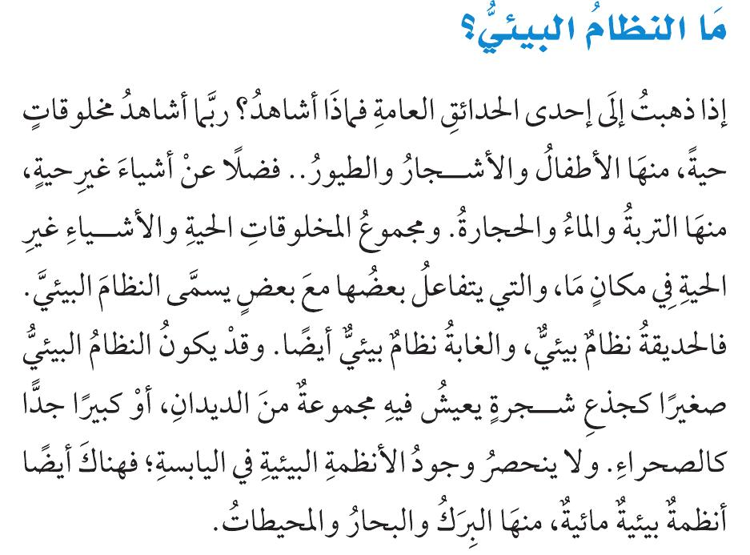
💡 الزبدة
النظام البيئي: مجموع المخلوقات الحية (الأطفال، الأشجار، الطيور) والأشياء غير الحية (التربة، الماء، الحجارة) في مكان ما، والتي يتفاعل بعضها مع بعض.
⚠️ فخ في الاختبار
قد يكون النظام البيئي صغيرًا كجذع شجرة يعيش فيه ديدان، أو كبيرًا جدًا كالصحراء. وهناك أنظمة بيئية مائية: البرك والبحار والمحيطات.
ص١٤٨ · ما النظام البيئي؟
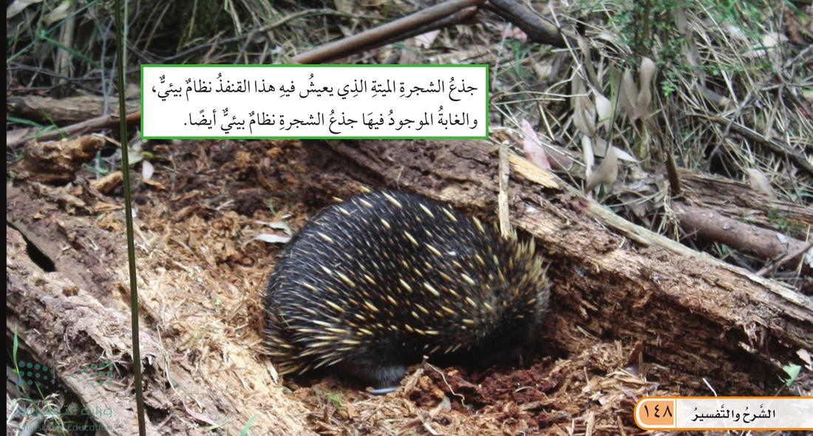
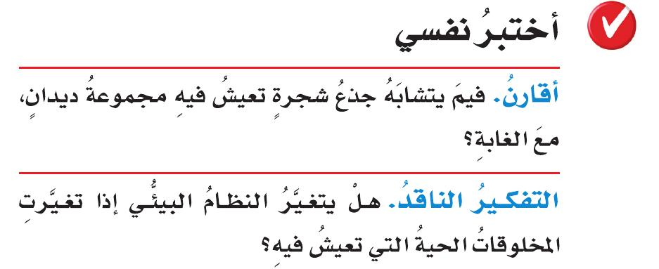
✍️ حلّ «أختبر نفسي»اضغطي لتري الإجابة
أقارن: كلاهما نظام بيئي فيه مخلوقات حية وأشياء غير حية يتفاعل بعضها مع بعض، لكن جذع الشجرة صغير والغابة كبيرة، وجذع الشجرة جزء من الغابة.
التفكير الناقد: نعم؛ لأن المخلوقات الحية تتفاعل مع غيرها ومع الأشياء غير الحية.
التفكير الناقد: نعم؛ لأن المخلوقات الحية تتفاعل مع غيرها ومع الأشياء غير الحية.
ص١٤٩ · الأنظمة البيئية على اليابسة
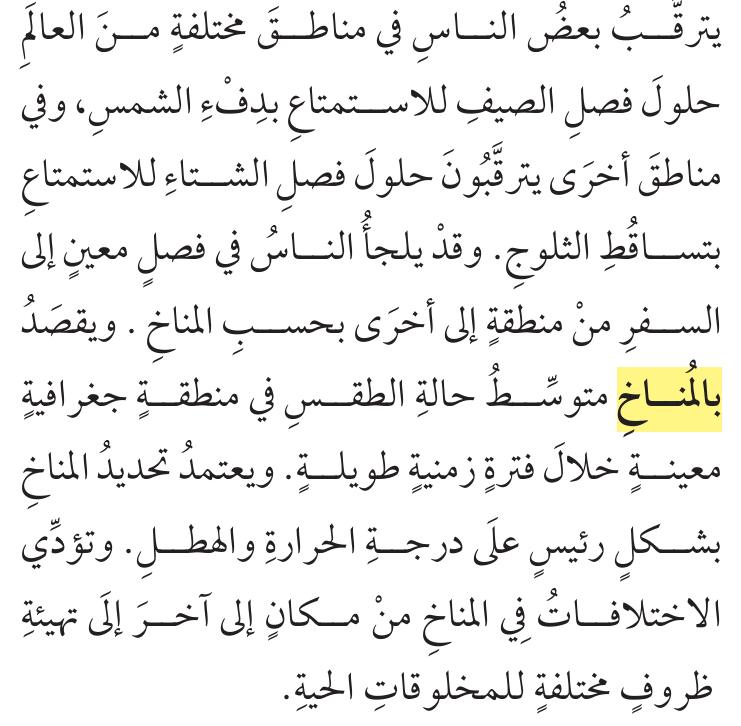
💡 الزبدة
المناخ: متوسط حالة الطقس في منطقة جغرافية معينة خلال فترة زمنية طويلة. ويعتمد تحديده بشكل رئيس على درجة الحرارة والهطل.
⚠️ فخ في الاختبار
الطقس حالة يومية متغيرة، أما المناخ فمتوسط حالة الطقس خلال فترة زمنية طويلة.
ص١٤٩ · الأنظمة البيئية على اليابسة
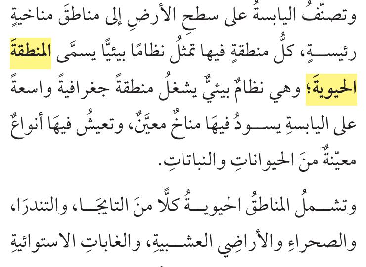
💡 الزبدة
المنطقة الحيوية: نظام بيئي يشغل منطقة جغرافية واسعة على اليابسة، يسود فيها مناخ معين، وتعيش فيها أنواع معينة من الحيوانات والنباتات.
🔍 المناطق الحيوية
التايجا، التندرا، الصحراء، الأراضي العشبية، الغابات الاستوائية المطيرة، الغابات المتساقطة الأوراق.
ص١٤٩ · الأنظمة البيئية على اليابسة
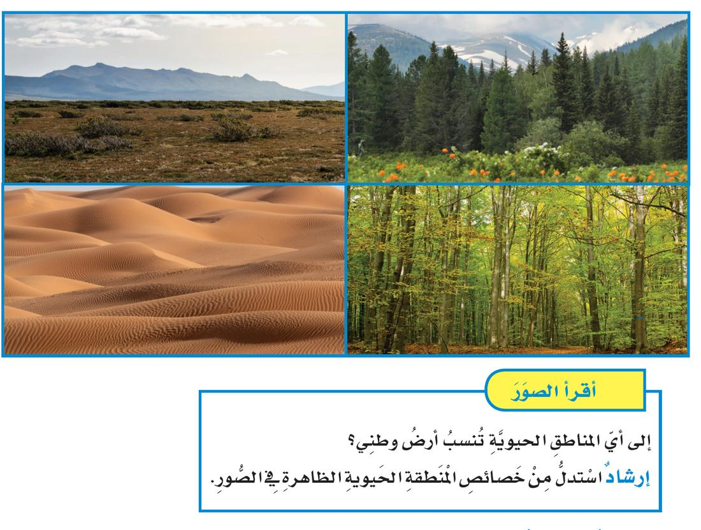
✍️ حلّ «أقرأ الصور»اضغطي لتري الإجابة
تنتسب أرض وطني في معظمها إلى منطقة الصحراء.
ص١٥٠ · الظروف المناخية
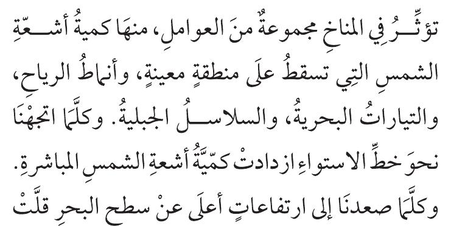
💡 عوامل تؤثر في المناخ
كمية أشعة الشمس، وأنماط الرياح، والتيارات البحرية، والسلاسل الجبلية.
🔍 توضيح
كلما اتجهنا نحو خط الاستواء ازدادت كمية أشعة الشمس المباشرة، وكلما صعدنا إلى ارتفاعات أعلى عن سطح البحر قلّت درجة الحرارة.
ص١٥٠ · الظروف المناخية
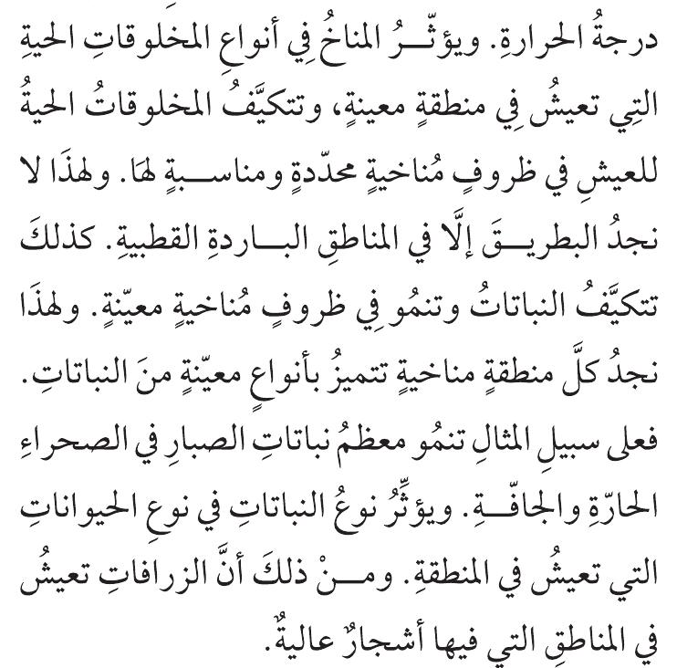
💡 الزبدة
يؤثر المناخ في أنواع المخلوقات الحية، وتتكيف المخلوقات للعيش في ظروف مناخية محددة. لذلك لا نجد البطاريق إلا في المناطق الباردة القطبية، وتنمو معظم نباتات الصبار في الصحراء الحارة الجافة.
🔍 توضيح
تؤثر النباتات في نوع الحيوانات؛ فالزرافات تعيش في المناطق التي فيها أشجار عالية.
ص١٥٠ · الظروف المناخية
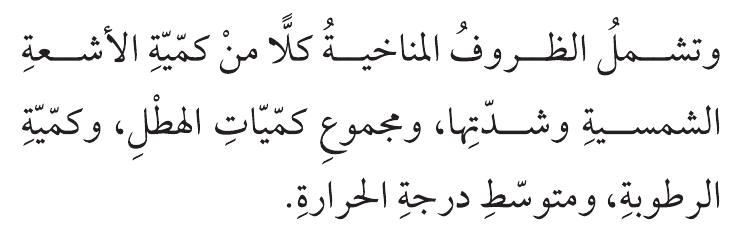
💡 الزبدة
الظروف المناخية: كمية الأشعة الشمسية وشدتها، ومجموع كميات الهطل، وكمية الرطوبة، ومتوسط درجة الحرارة.
ص١٥٠ · الظروف المناخية
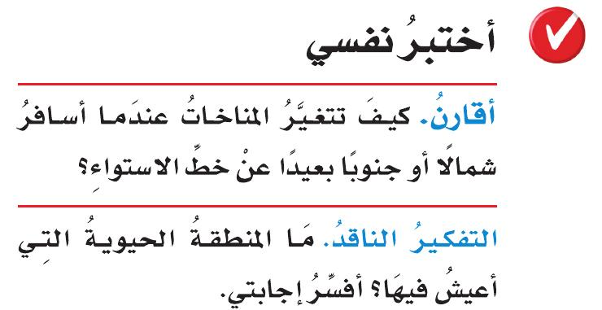
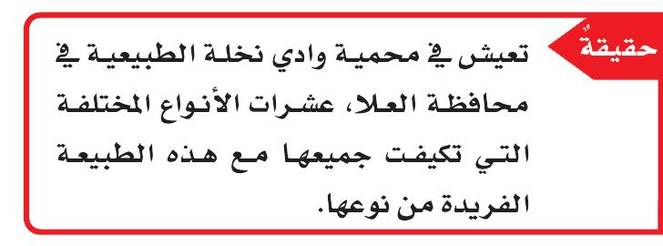
✍️ حلّ «أختبر نفسي»اضغطي لتري الإجابة
أقارن: كلما ابتعدت عن خط الاستواء قلّت كمية أشعة الشمس المباشرة، فتقلّ درجة الحرارة.
التفكير الناقد: منطقة الصحراء؛ لأن مناخها حار جاف وقليل الهطل.
التفكير الناقد: منطقة الصحراء؛ لأن مناخها حار جاف وقليل الهطل.
ص١٥١ · التندرا والتايجا
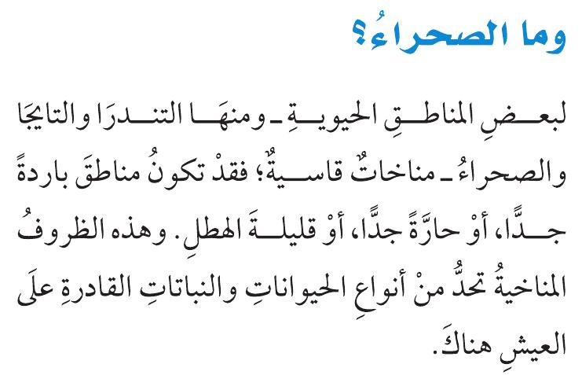
💡 الزبدة
بعض المناطق الحيوية، ومنها التندرا والتايجا والصحراء، مناخاتها قاسية: باردة جدًا، أو حارة جدًا، أو قليلة الهطل، وهذا يحدّ من أنواع الحيوانات والنباتات القادرة على العيش فيها.
ص١٥١ · التندرا والتايجا
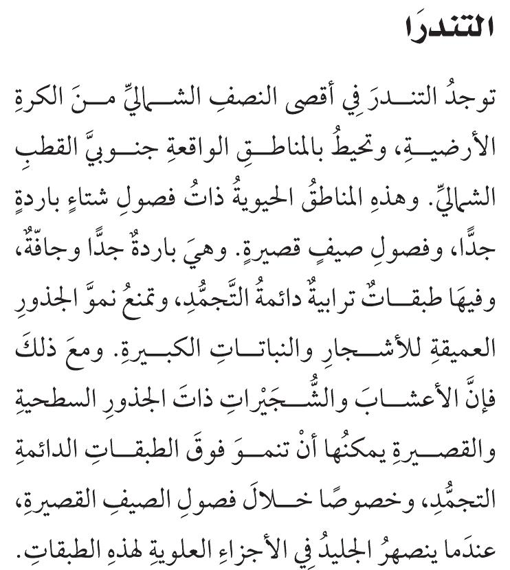
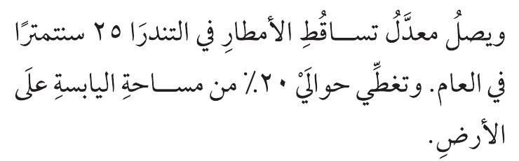
💡 التندرا
في أقصى النصف الشمالي من الكرة الأرضية، جنوبي القطب الشمالي. شتاؤها بارد جدًا وطويل، وصيفها قصير. وفيها طبقات ترابية دائمة التجمد تمنع نمو الجذور العميقة للأشجار والنباتات الكبيرة.
🔍 توضيح
الأعشاب والشجيرات ذات الجذور السطحية القصيرة يمكنها أن تنمو فوق الطبقات الدائمة التجمد، عندما ينصهر الجليد في الصيف القصير. ومعدل الأمطار نحو ٢٥ سنتمترًا في العام.
ص١٥١ · التندرا والتايجا
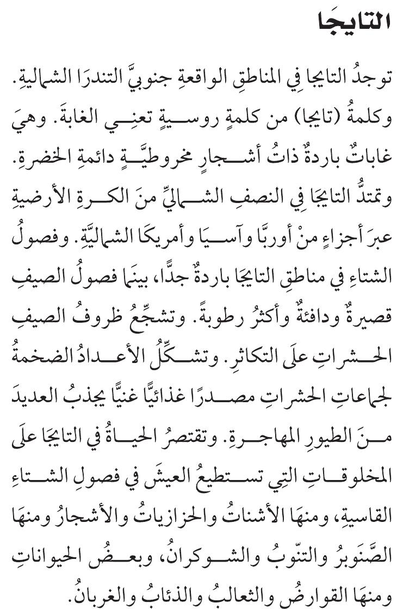
💡 التايجا
تقع جنوبي التندرا الشمالية، وكلمة (تايجا) روسية تعني الغابة. غابات باردة ذات أشجار مخروطية دائمة الخضرة، في النصف الشمالي من الكرة الأرضية. شتاؤها بارد جدًا، وصيفها قصير ودافئ وأكثر رطوبة.
🔍 توضيح
تشجع ظروف الصيف الحشرات على التكاثر، فتشكّل مصدرًا غذائيًا للطيور المهاجرة. ومن نباتاتها: الأشنات والحزازيات والصنوبر والتنوب، ومن حيواناتها: القوارض والثعالب والذئاب والغربان.
ص١٥٢ · الصحارى
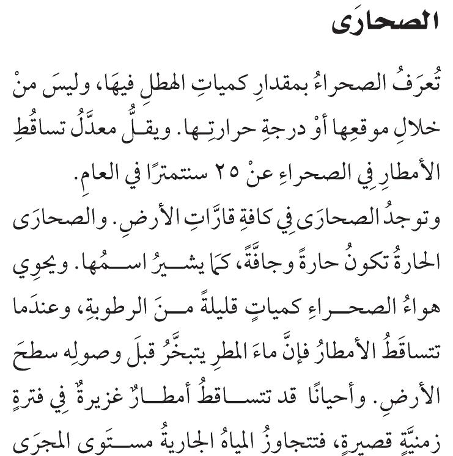
💡 الزبدة
تُعرف الصحراء بمقدار كميات الهطل فيها، وليس من خلال موقعها أو درجة حرارتها. ويقل معدل تساقط الأمطار فيها عن ٢٥ سنتمترًا في العام.
⚠️ فخ في الاختبار
ليست جميع الصحارى حارة؛ فهناك صحارى باردة قرب القطب الجنوبي.
ص١٥٢ · الصحارى
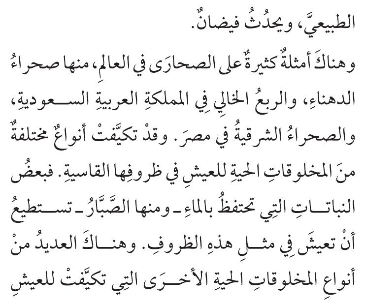
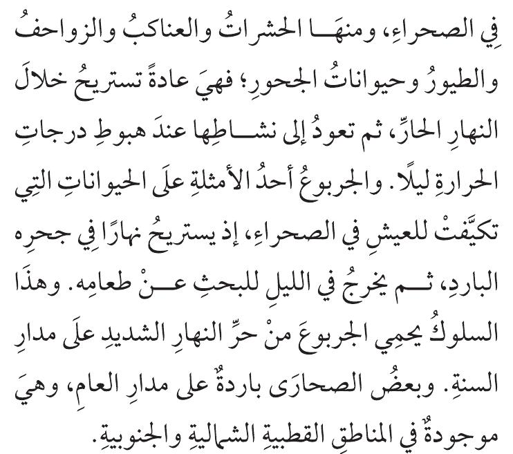
🔍 أمثلة من الكتاب
صحراء الدهناء، والربع الخالي في المملكة العربية السعودية، والصحراء الشرقية في مصر.
💡 التكيف في الصحراء
بعض النباتات تحتفظ بالماء، ومنها الصبار. وكثير من الحيوانات تستريح خلال النهار الحار وتنشط ليلًا، ومنها الجربوع الذي يستريح نهارًا في جحره البارد.
ص١٥٢ · الصحارى
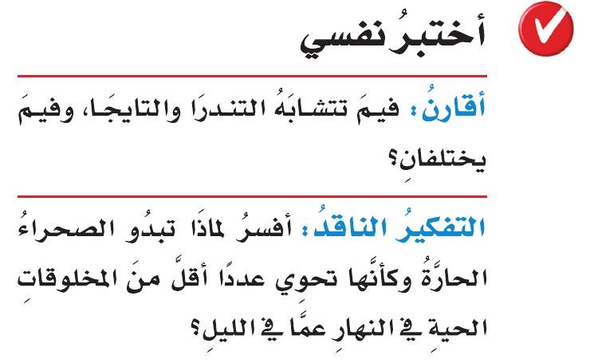
✍️ حلّ «أختبر نفسي»اضغطي لتري الإجابة
أقارن: كلاهما في النصف الشمالي من الكرة الأرضية، شتاؤهما بارد جدًا وصيفهما قصير. لكن التندرا فيها طبقات دائمة التجمد ولا تنمو فيها الأشجار الكبيرة، والتايجا غابات ذات أشجار مخروطية.
التفكير الناقد: لأن كثيرًا من حيواناتها تستريح خلال النهار الحار، وتعود إلى نشاطها ليلًا.
التفكير الناقد: لأن كثيرًا من حيواناتها تستريح خلال النهار الحار، وتعود إلى نشاطها ليلًا.
ص١٥٣ · الأراضي العشبية والغابات المتساقطة الأوراق
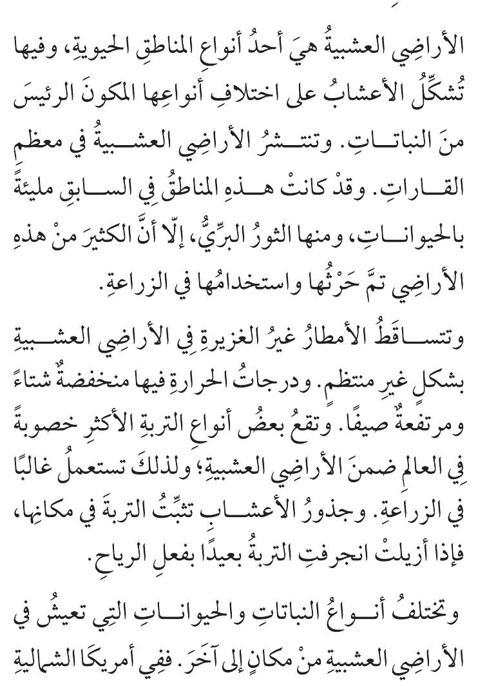
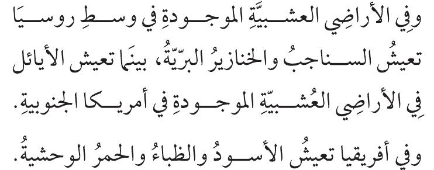
💡 الأراضي العشبية
تشكّل الأعشاب فيها المكون الرئيس من النباتات، وأمطارها غير غزيرة وغير منتظمة، وتربتها من أكثر أنواع التربة خصوبة، لذلك تُستعمل غالبًا في الزراعة. وجذور الأعشاب تثبّت التربة.
🔍 حيواناتها في الكتاب
أمريكا الشمالية: الثور البري، وذئب البراري، والغرير، والنمس.
روسيا: السناجب والخنازير البرية.
إفريقيا: الأسود والظباء والحمر الوحشية.
روسيا: السناجب والخنازير البرية.
إفريقيا: الأسود والظباء والحمر الوحشية.
ص١٥٣ · الأراضي العشبية والغابات المتساقطة الأوراق
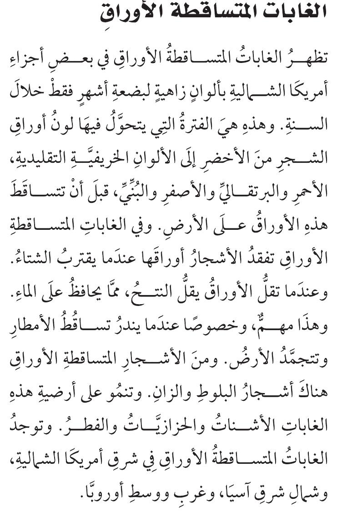
💡 الغابات المتساقطة الأوراق
تفقد أشجارها أوراقها عندما يقترب الشتاء، فعندما تقل الأوراق يقل النتح، فيحافظ النبات على الماء. ومن أشجارها البلوط والزان.
⚠️ فخ في الاختبار
سقوط الأوراق في الشتاء يقلل النتح فيحافظ على الماء، وهذا مهم عندما يندر تساقط الأمطار وتتجمد الأرض.
ص١٥٤ · الغابات والأنظمة ذات المياه العذبة
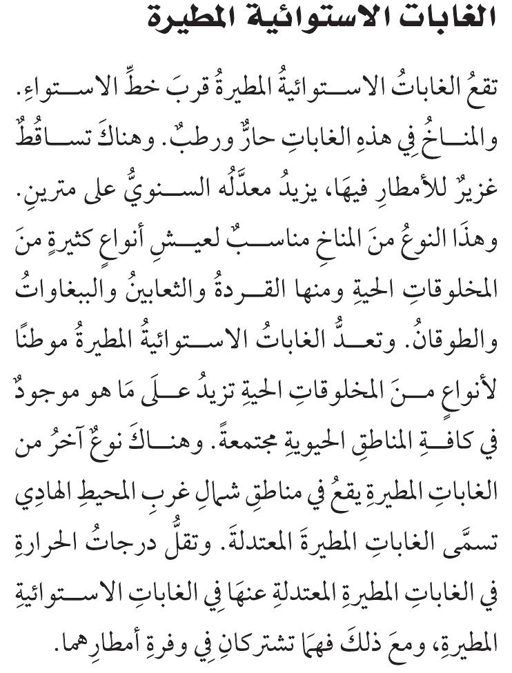
💡 الغابات الاستوائية المطيرة
تقع قرب خط الاستواء، مناخها حار ورطب، ومعدل أمطارها السنوي يزيد على مترين. وهي موطن لأنواع من المخلوقات الحية تزيد على ما هو موجود في كافة المناطق الحيوية مجتمعة.
⚖️ انتبهي للفرق
الاستوائية المطيرة
قرب خط الاستواء
حرارة أعلى
المطيرة المعتدلة
شمال غرب المحيط الهادي
حرارة أقل
ص١٥٤ · الغابات والأنظمة ذات المياه العذبة
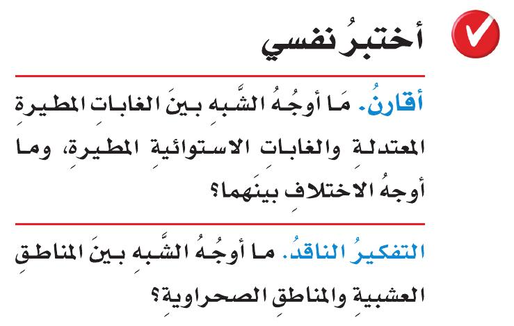
✍️ حلّ «أختبر نفسي»اضغطي لتري الإجابة
أقارن: تشتركان في وفرة أمطارهما، وتختلفان في درجات الحرارة؛ فهي أقل في الغابات المطيرة المعتدلة.
التفكير الناقد: المناطق العشبية والصحراوية كلتاهما أمطارها قليلة أو غير منتظمة.
التفكير الناقد: المناطق العشبية والصحراوية كلتاهما أمطارها قليلة أو غير منتظمة.
ص١٥٤ · الغابات والأنظمة ذات المياه العذبة
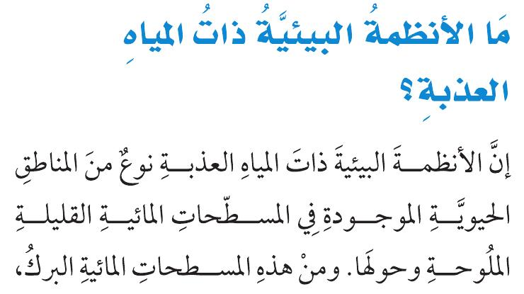
💡 الزبدة
الأنظمة البيئية ذات المياه العذبة: المسطحات المائية القليلة الملوحة وما حولها، ومنها البرك، والبحيرات، والجداول، والأنهار، والمستنقعات.
ص١٥٤ · الغابات والأنظمة ذات المياه العذبة
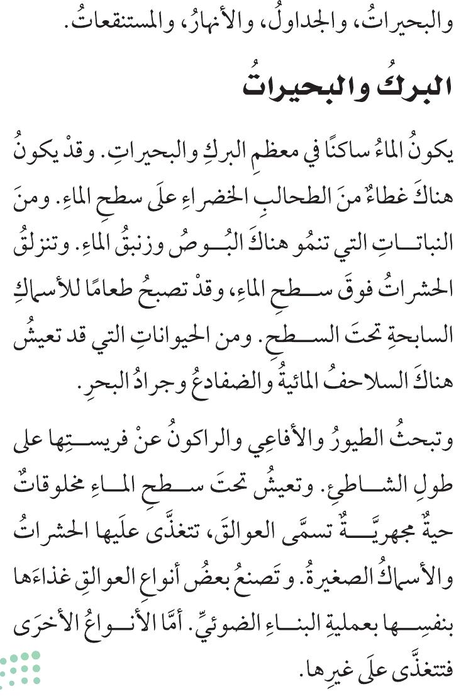
💡 البرك والبحيرات
يكون الماء ساكنًا في معظمها، وقد يغطيها غطاء من الطحالب الخضراء، وتنمو فيها نباتات البوص وزنبق الماء.
🔍 توضيح
تعيش تحت سطح الماء مخلوقات حية مجهرية تسمى العوالق؛ بعضها يصنع غذاءه بالبناء الضوئي، والأخرى تتغذى على غيرها، وتتغذى عليها الحشرات والأسماك الصغيرة.
ص١٥٥ · الأنهار والأراضي الرطبة ومصبات الأنهار
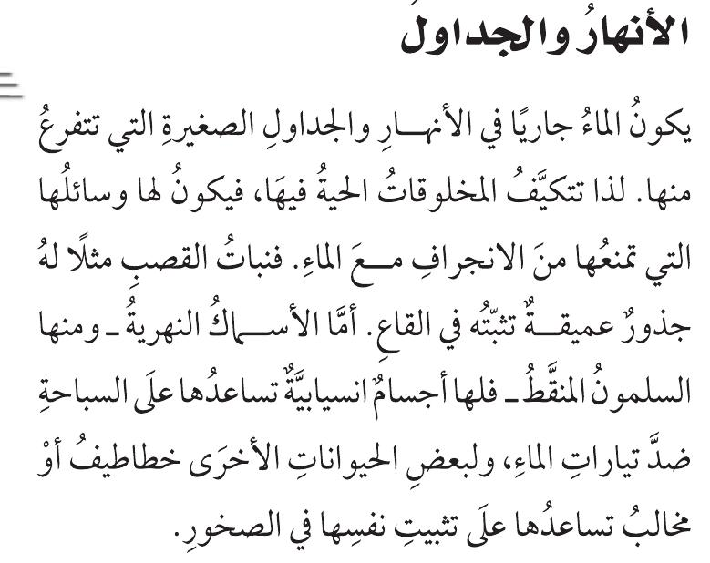
💡 الأنهار والجداول
الماء فيها جارٍ، لذا تتكيف المخلوقات الحية لتمنعها من الانجراف: فنبات القصب له جذور عميقة تثبته، والأسماك النهرية أجسامها انسيابية، ولبعض الحيوانات خطاطيف أو مخالب.
ص١٥٥ · الأنهار والأراضي الرطبة ومصبات الأنهار
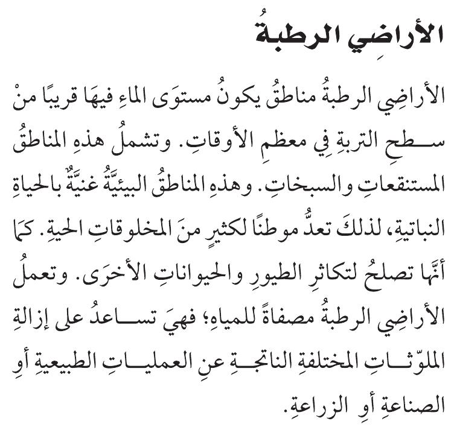
💡 الأراضي الرطبة
مناطق يكون مستوى الماء فيها قريبًا من سطح التربة، ومنها المستنقعات والسبخات. غنية بالحياة النباتية، وتصلح لتكاثر الطيور.
🔍 توضيح
الأراضي الرطبة مصفاة للمياه: تساعد على إزالة الملوثات الناتجة عن العمليات الطبيعية أو الصناعة أو الزراعة.
ص١٥٥ · الأنهار والأراضي الرطبة ومصبات الأنهار
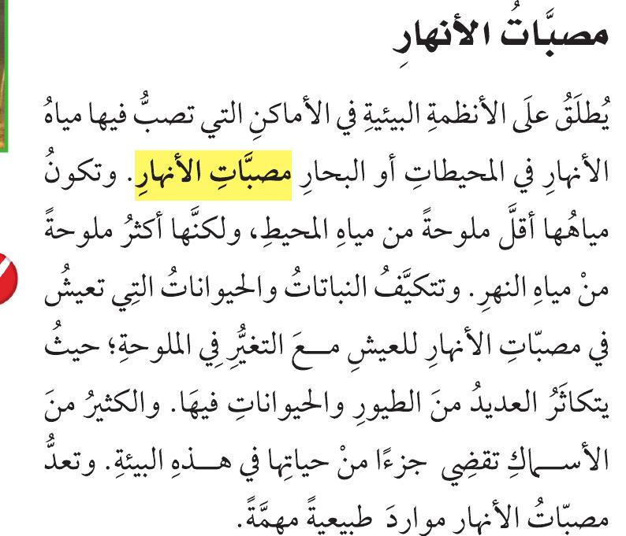
💡 الزبدة
مصبات الأنهار: الأنظمة البيئية في الأماكن التي تصب فيها مياه الأنهار في المحيطات أو البحار. مياهها أقل ملوحة من مياه المحيط، وأكثر ملوحة من مياه النهر.
⚠️ فخ في الاختبار
تتكيف مخلوقات مصبات الأنهار للعيش مع التغير في الملوحة، ويتكاثر فيها كثير من الطيور والحيوانات، وتعد موارد طبيعية مهمة.
ص١٥٥ · الأنهار والأراضي الرطبة ومصبات الأنهار
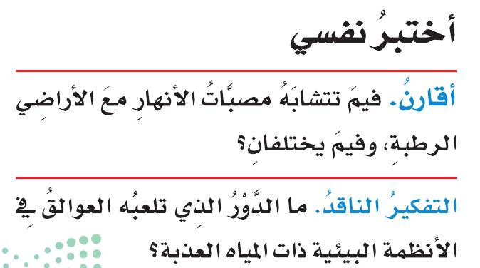
✍️ حلّ «أختبر نفسي»اضغطي لتري الإجابة
أقارن: كلاهما نظام بيئي مائي غني بالحياة ويتكاثر فيه كثير من الطيور، لكن مصبات الأنهار مياهها متغيرة الملوحة.
التفكير الناقد: العوالق غذاء للحشرات والأسماك الصغيرة، وبعضها يصنع غذاءه بالبناء الضوئي.
التفكير الناقد: العوالق غذاء للحشرات والأسماك الصغيرة، وبعضها يصنع غذاءه بالبناء الضوئي.
ص١٥٦ · ما الذي يعيش في المحيط؟
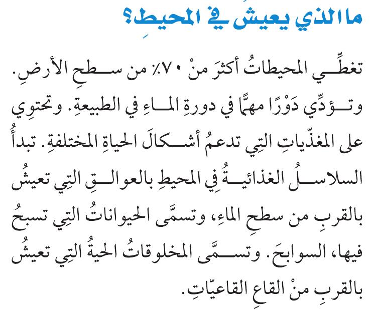
💡 الزبدة
تغطي المحيطات أكثر من ٧٠٪ من سطح الأرض، وتؤدي دورًا مهمًا في دورة الماء. تبدأ السلاسل الغذائية فيها بالعوالق التي تعيش قرب السطح.
⚖️ انتبهي للفرق
السوابح
الحيوانات التي تسبح في الماء
الجراد، الأسماك، الدلافين
القاعيات
تعيش بالقرب من القاع
سرطان البحر، الإسفنج، المرجان
ص١٥٦ · ما الذي يعيش في المحيط؟
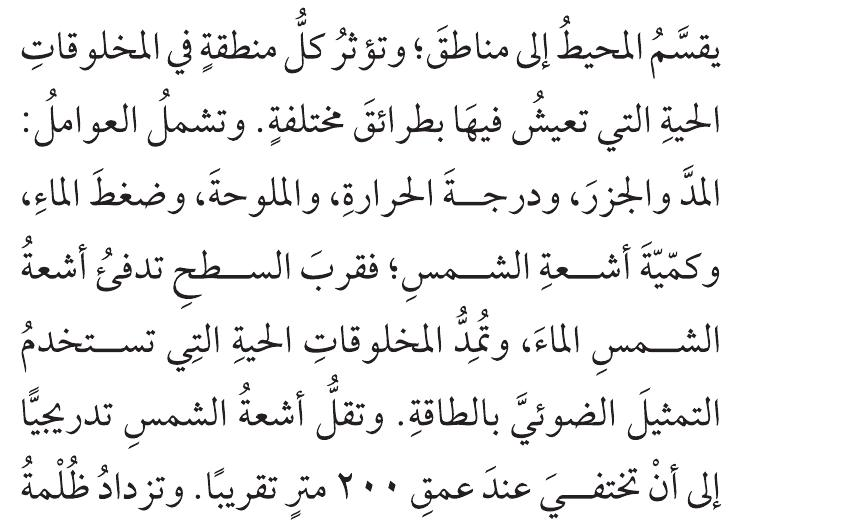
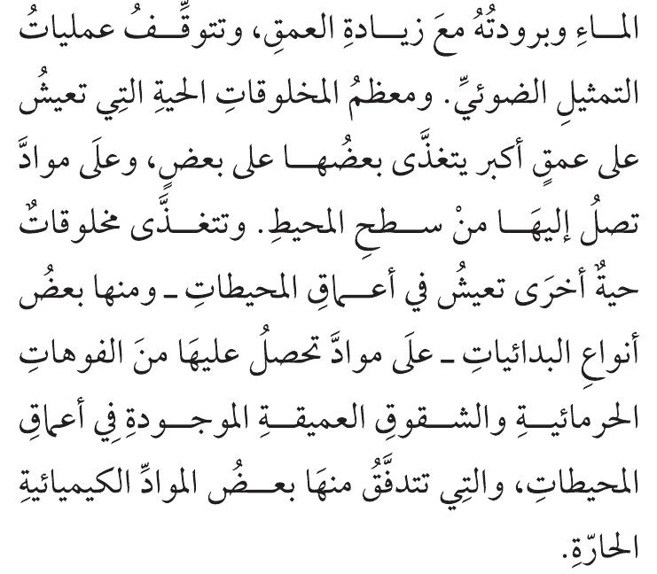
💡 الزبدة
يقسّم المحيط إلى مناطق، وتؤثر فيها: المد والجزر، ودرجة الحرارة، والملوحة، وضغط الماء، وكمية أشعة الشمس.
⚠️ فخ في الاختبار
تقل أشعة الشمس تدريجيًا حتى تختفي عند عمق ٢٠٠ متر تقريبًا، فتتوقف عمليات البناء الضوئي، وتزداد ظلمة الماء وبرودته. وتتغذى بعض البدائيات في الأعماق على مواد تتدفق من الفوهات الحرمائية.
ص١٥٦ · ما الذي يعيش في المحيط؟
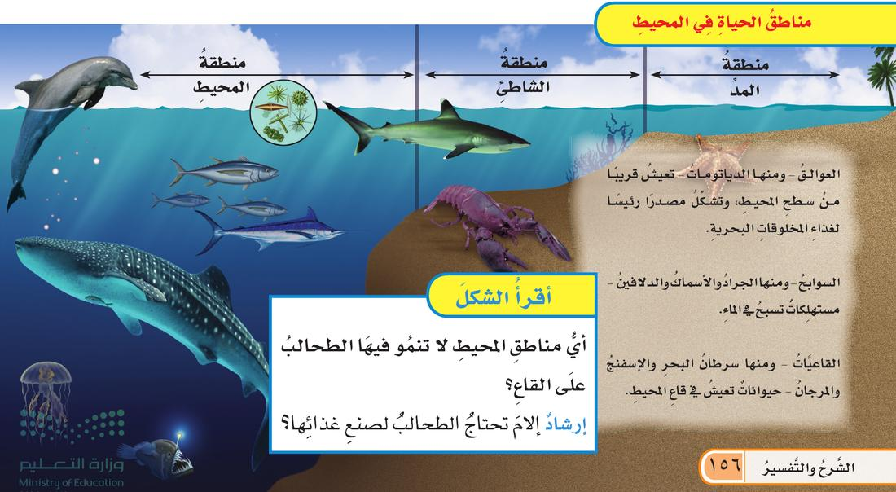
🔍 مناطق الحياة في المحيط
منطقة المد ← منطقة الشاطئ ← منطقة المحيط.
✍️ حلّ «أقرأ الشكل»اضغطي لتري الإجابة
في أعماق منطقة المحيط؛ لأن الطحالب تحتاج إلى ضوء الشمس لتصنع غذاءها، وأشعة الشمس تختفي عند عمق ٢٠٠ متر تقريبًا.
ص١٥٦ · ما الذي يعيش في المحيط؟
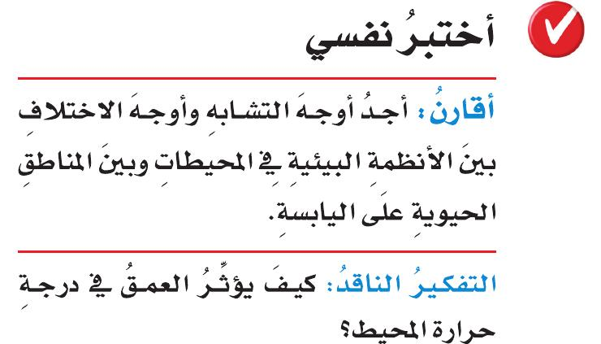
✍️ حلّ «أختبر نفسي»اضغطي لتري الإجابة
أقارن: التشابه: في كلٍّ منها مخلوقات تكيفت مع ظروف المكان. الاختلاف: في المحيط تؤثر الملوحة وضغط الماء والمد والجزر، وعلى اليابسة تؤثر درجة الحرارة والهطل.
التفكير الناقد: كلما زاد العمق قلّت أشعة الشمس، فتنخفض درجة الحرارة.
التفكير الناقد: كلما زاد العمق قلّت أشعة الشمس، فتنخفض درجة الحرارة.
📌 الخلاصة · خريطة المفاهيم
🌍 الأنظمة البيئيةمخلوقات حية + أشياء غير حية
⬇منها
🏜️ على اليابسةالمناطق الحيوية يحددها المناخ
⬇ومنها
🌊 في الماءمياه عذبة · مصبات أنهار · محيطات
المناطق الحيوية
- التندرا: طبقات دائمة التجمد
- التايجا: أشجار مخروطية
- الصحراء: هطل أقل من ٢٥ سم
- الأراضي العشبية: تربة خصبة
- الغابات المتساقطة الأوراق والمطيرة
الأنظمة المائية
- البرك والبحيرات: ماء ساكن
- الأنهار والجداول: ماء جارٍ
- الأراضي الرطبة: مصفاة للمياه
- مصبات الأنهار: ملوحة متغيرة
- المحيطات: ٧٠٪ من سطح الأرض
📌 الخلاصة · لا تخلطي بينها
التندرا
المناخباردة جدًا وجافة
ما يميزهاطبقات دائمة التجمد
التايجا
المناخشتاء بارد وصيف قصير دافئ
ما يميزهاأشجار مخروطية دائمة الخضرة
الصحراء
المناخهطل أقل من ٢٥ سم في العام
ما يميزهانباتات تحتفظ بالماء وحيوانات تنشط ليلًا
📌 الخلاصة · لا تخلطي بينها
الغابات الاستوائية المطيرة
ما يميزهاحارة ورطبة، أمطار تزيد على مترين
الغابات المتساقطة الأوراق
ما يميزهاتفقد أوراقها في الشتاء
الأراضي العشبية
ما يميزهاالأعشاب المكون الرئيس، تربة خصبة
📌 الخلاصة · أهم النقاط
- النظام البيئي: مخلوقات حية وأشياء غير حية يتفاعل بعضها مع بعض، وقد يكون صغيرًا أو كبيرًا، على اليابسة أو في الماء.
- المناخ يعتمد على درجة الحرارة والهطل، ويحدد المنطقة الحيوية.
- المناطق الحيوية: التندرا، التايجا، الصحراء، الأراضي العشبية، الغابات المتساقطة الأوراق، الغابات الاستوائية المطيرة.
- الأنظمة ذات المياه العذبة: البرك والبحيرات، الأنهار والجداول، الأراضي الرطبة، ثم مصبات الأنهار.
- في المحيط تبدأ السلاسل الغذائية بالعوالق، وتختفي أشعة الشمس عند عمق ٢٠٠ متر تقريبًا.
🧠 اختبري نفسك · ١ من ٤
بمَ تُعرّف الصحراء: بدرجة حرارتها أم بكمية الهطل فيها؟
✅ الجوابفكّري ثم اضغطي
بكمية الهطل؛ فيقل معدل تساقط الأمطار فيها عن ٢٥ سنتمترًا في العام.
🧠 اختبري نفسك · ٢ من ٤
أي منطقة حيوية فيها طبقات ترابية دائمة التجمد؟
✅ الجوابفكّري ثم اضغطي
التندرا.
🧠 اختبري نفسك · ٣ من ٤
لماذا تفقد أشجار الغابات المتساقطة الأوراق أوراقها في الشتاء؟
✅ الجوابفكّري ثم اضغطي
لتقلّ عملية النتح، فيحافظ النبات على الماء.
🧠 اختبري نفسك · ٤ من ٤
ما الذي يميز مياه مصبات الأنهار؟
✅ الجوابفكّري ثم اضغطي
أقل ملوحة من مياه المحيط، وأكثر ملوحة من مياه النهر.
🌟
أحسنتِ!
أنهيتِ الدرس. ثبّتي ما تعلمتِه باللعب.
🎮 العبي ألعاب الدرس في «نجمات العلوم»🖨️ نسخة الطباعة A5 📚 دروس الكتاب